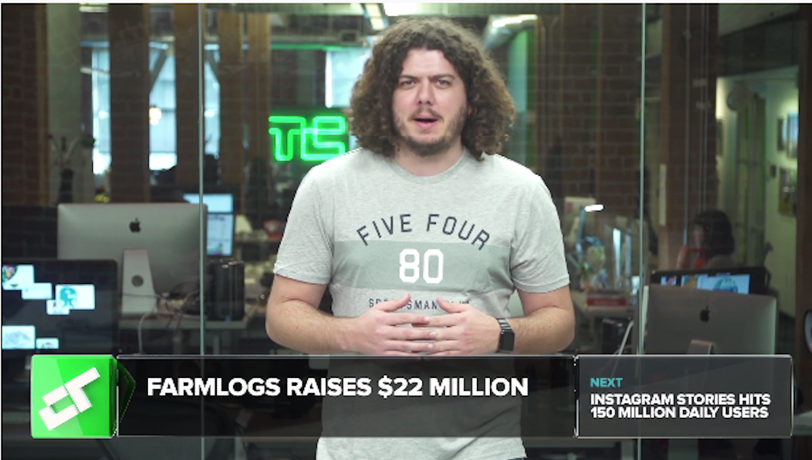

10 th Annual Crunchies Brooklyn 99 star Chelsea Peretti To Host The Crunchies This February Ge Your Tickets Today
WATCH NOW CRUNCH Report

Have a tip, pitch or guest colum? Send us a tip

Facebook Previews
Facebook Previews
Facebook Previews Journalism Project features
by Josh Constine
Have a tip, pitch or guest column? Send us a tip.